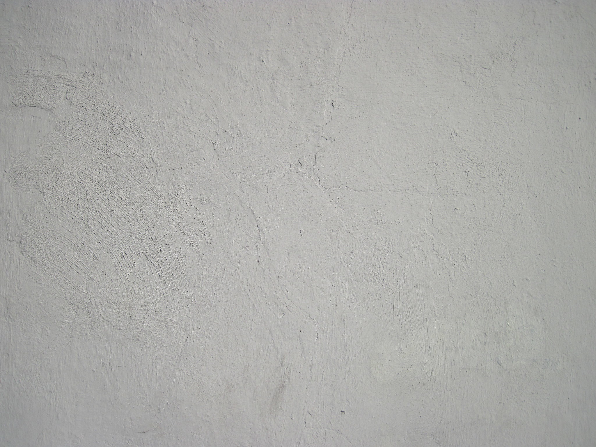

# Test Doc $[ceiling](https://live.staticflickr.com/750/20998785236_450cd2b04e_b.jpg) This is the first room ## Second room > This block quote has an audio clip attached to it. ^(audio/example.m4a) ## Third Room ```MarkDown Code block ```
Build!
